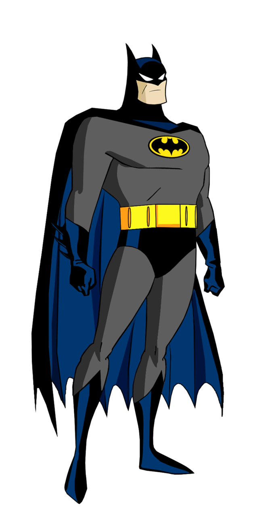
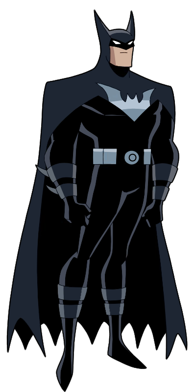

Traje classico
Este traje é um dos mais icônicos do Batman, com
um visual clássico que combina o cinza com
detalhes em preto e o símbolo do morcego no peito
com o fundo amarelo. Este visual é bastante
nostálgico para os fãs da série dos anos 90
e captura a essência do Batman como um herói
sombrio, mas ainda assim um pouco mais colorido
do que as versões mais modernas.

Traje da Liga da Justiça Sem Limites
Este traje é muito mais sombrio, refletindo uma versão alternativa do Batman de um universo paralelo, onde ele é parte dos "Justice Lords", uma versão mais autoritária da Liga da Justiça. O traje é quase totalmente preto, com detalhes em cinza escuro e um símbolo de morcego no peito sem o fundo amarelo, o que dá um ar ainda mais ameaçador e sério ao personagem.